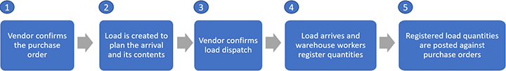
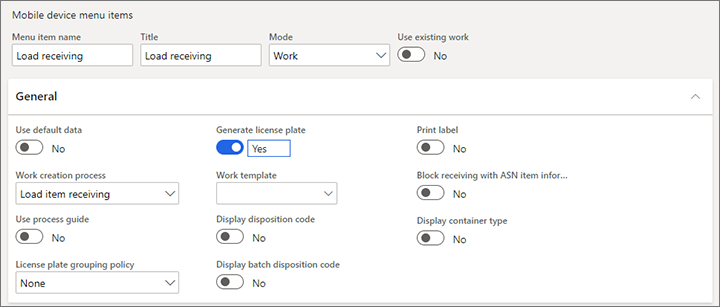
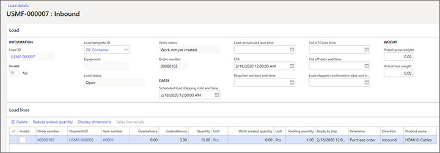

Lagerabwicklung eingehender Ladungen für Bestellungen
In diesem Thema wird der Lagerbehandlungsprozess für eingehende Ladungen für Bestellungen beschrieben.
Für jede eingehende Ladung sollte Ihr System bereits einen zugehörigen Kundenauftrag enthalten, und sie kann auch eine zugehörige Ladungsspezifikation und/oder einen zugehörigen Transportplan enthalten. Weitere Informationen zum Erstellen und Verwalten eingehender Auslastungen finden Sie unter Geschäftsprozess: Transport für eingehende Ladungen planen.
Übersicht: Wie eingehende Lasten erstellt, registriert und empfangen werden
Die folgende Abbildung zeigt den typischen Ablauf für die Bearbeitung eingehender Ladungen mit Bestellmengen, wenn diese in Ihrem Lager eintreffen.

Der Lieferant bestätigt die Bestellung.
Der Prozess beginnt, wenn eine Bestellung in das System eingegeben und dann an einen Lieferanten geliefert wird, der die Bestellung bestätigt. Die Bestellung muss vorhanden sein, bevor Sie einen Eingangsladedatensatz erstellen können. Sie können die eingehende Ladung jedoch auch dann erstellen, wenn die Bestellung nicht bestätigt wurde. Weitere Informationen finden Sie unter Bestellungen genehmigen und bestätigen.
Ein eingehender Ladedatensatz wird erstellt, um die Ankunft und den Inhalt zu planen.
Der Eingangsladedatensatz repräsentiert eine Lieferantensendung einer oder mehrerer Bestellungen. Es wird erwartet, dass die Ladung als eine einzige physische Transporteinheit (z. B. eine LKW-Ladung) im Lager ankommt. Der eingehende Ladungsdatensatz wird zu Planungszwecken verwendet und ermöglicht es dem Logistikkoordinator, den Fortschritt der Ladung vom Lieferanten zu verfolgen. Es wird auch verwendet, um Bestellpostenmengen zu registrieren und den Fortschritt durch Lageroperationen wie Ankunfts- und Einlagerungsarbeiten zu verwalten. Ladungen können entweder automatisch oder manuell erstellt werden und sie können entweder auf einer Bestellung oder einem Lieferavis (ASN) des Lieferanten basieren. Weitere Informationen finden Sie unter Erstellen oder ändern Sie eine eingehende Last.
Der Lieferant bestätigt den Ladungsversand.
Wenn der Lieferant die Ladung versendet, bestätigt der Logistikkoordinator im empfangenden Lager die Ladungssendung. Wenn die empfangende Firma das Modul Transport-Management verwendet, löst die Versandbestätigung andere Lastmanagementprozesse aus, die den eingehenden Ladungen zugeordnet sind. Weitere Informationen finden Sie unter Bestätigen Sie eine Ladung für den Versand.
Die Ladung kommt im Lager an und die Arbeiter registrieren Mengen.
Wenn eine LKW-Ladung am Wareneingangsdock ankommt, registrieren die Lagerarbeiter die Ladungsmengen. Wenn das Modul Lagerverwaltung verwendet wird, führen die Mitarbeiter die Registrierung über mobile Geräte durch. Weitere Informationen finden Sie unter Produktbeleg gegen Bestellungen – Registrierung und Registrieren Sie Artikelmengen, die bei einer eingehenden Ladung eintreffen.
Registrierte Ladungsmengen werden gegen Bestellungen gebucht.
Nachdem die Ladungsmengen als eingetroffen registriert wurden, müssen diese Mengen im Wareneingang des Unternehmens verbucht werden, um die physische Bestandserhöhung zu erfassen. Weitere Informationen finden Sie unter Produktbeleg gegen Bestellungen – Produktbeleg und Buchen Sie registrierte Produktmengen gegen Bestellungen.
Registrieren Sie Artikelmengen, die bei einer eingehenden Ladung eintreffen
Microsoft Dynamics 365 Supply Chain Management unterstützt verschiedene betriebliche Ansätze zur Erfassung des Eintreffens bestellter Produkte. Daher können Sie das System so konfigurieren, dass es Ihren spezifischen Geschäftsanforderungen entspricht. In diesem Abschnitt wird beschrieben, wie Sie eingehende Artikelmengen mithilfe eines Mobilgeräts registrieren, wenn die erweiterte Lagerverwaltung im System aktiviert ist. Es gibt jedoch einen alternativen Ablauf, der auf der Verwendung des Artikelankunftsjournals anstelle eines mobilen Geräts basiert. Weitere Informationen über den Fluss finden Sie unter Artikel für die erweiterte Lagerhaltung für aktivierte Artikel mithilfe der Wareneingangserfassung erfassen.
Wenn eine eingehende Ladung zum ersten Mal im Lager ankommt, müssen die Lagerarbeiter die Artikelmengen registrieren, die in der Sendung enthalten sind. In der Regel verwenden sie Handscanner. Dieser Workflow ist nur verfügbar, wenn die folgenden Elemente im System vorhanden sind:
Ein Eingangsladedatensatz, der die Artikelmengen beschreibt, die in der Sendung erwartet werden
In der Regel bestätigt der Lieferant den Datensatz für eingehende Ladungen, bevor die Lieferung im Lager eintrifft. Daher hat die Last den Status Versandt. Lagerarbeiter können jedoch auch Artikelmengen für Ladungen mit dem Status Offen oder Empfangen erfassen.
Ein Menü für mobile Geräte, das so konfiguriert ist, dass es den Lastempfang unterstützt
Die Warehouse-App für mobile Geräte unterstützt die folgenden Arbeitserstellungsprozesse:
- Artikelempfang aus Ladung
- Artikelempfang und -einlagerung aus Ladung
- Gemischter Kennzeichenempfang, wo das Feld für die Methode zur Identifizierung der Quelldokumentzeile für den Menüpunkt Mobilgerät auf Artikel empfangen festgelegt ist. Weitere Informationen finden Sie unter Gemischter Ladungsträgerempfang.
- Gemischter Ladungsträgerempfang und -einlagerung, wo das Feld Methode zur Identifizierung der Quelldokumentzeile für den Menüpunkt Mobilgerät auf Artikel empfangen festgelegt ist. Weitere Informationen finden Sie unter Gemischter Ladungsträgerempfang.
Note
Unabhängig vom Prozess generiert das System Arbeit, um am Empfangsort registrierte Mengen zu entnehmen und am regulären Lagerort abzulegen. Wenn der Prozess Artikel empfangen und eingelagert oder Gemischte Ladungsträger erhalten und eingelagert verwendet wird, wird der Arbeiter, der die Ladungsmenge registriert hat, vom Gerät auch angewiesen, die Einlagerungsarbeiten im Rahmen der Registrierungsaufgabe auszuführen. Im Gegensatz dazu besteht für den Prozess Artikelladung empfangen und Gemischter Ladungseingangempfang die Annahme, dass die Einlagerungsarbeiten getrennt von der Registrierungsaufgabe ausgeführt werden.
Eine Arbeitsvorlage, die Entnahme- und Einlagerungsarbeit für eingehende Lasten definiert
Dieser Artikel bezieht sich auf die vorherigen Artikel. Sie müssen mindestens eine Arbeitsvorlage für die Vorlage Bestellung Arbeitsauftragstyp haben und sie muss eine Reihe von Entnahme/Einlagerungs-Arbeitstypen enthalten.
Das mobile Gerät führt den Lagerempfänger durch den Ablauf für die Registrierung der Ladungsmenge. Dieser Ablauf umfasst mindestens die folgenden Schritte für jede Last-ID:
- Geben Sie die Last-ID ein.
- Geben Sie eine Beschreibung für den empfangenen Artikel ein.
- Geben Sie die Menge der empfangenen Artikelnummer ein.
- Geben Sie das Kennzeichennummer für den ursprünglichen Standort des Artikels ein, wenn das System nicht so eingerichtet ist, dass diese Nummer automatisch generiert wird.
- Tippen Sie auf OK.
Nachdem der Mitarbeiter diese Schritte ausgeführt hat, nimmt das System die folgenden Aktualisierungen an den entsprechenden Entitäten vor, vorausgesetzt, die Bestellungsmenge ist auf einer Ladung angekommen und alle Ladungsmengen wurden registriert:
| Entität | Aktualisierungen | Notiz |
|---|---|---|
| Last | Das Feld Arbeit erstellt Menge in der Ladezeile wird aktualisiert, um die registrierte Menge anzuzeigen. | Der Wert Ladestatus bleibt Versandt oder Offen, wenn für die Ladung keine Versandbestätigung ausgeführt wurde. Wenn mindestens eine Einlagerungszeile gestartet wurde, wird diese in In Bearbeitung geändert. |
| Bestandsbuchung einer Bestellung, für die zugehörige Ladungsmengen registriert wurden | Folgende Felder werden aktualisiert:
|
Die Möglichkeit, eine Verknüpfung zwischen der Bestellungs-Bestandtransaktion und den Mengen herzustellen, die für die Ladung registriert sind, wurde in Version 10.0.9 als optionale Funktion eingeführt, die Ordnen Sie Bestelltransaktionen der Bestellung zu benannt wurde. Diese Funktion ist besonders vorteilhaft für Betriebsabläufe, bei denen eine einzelne Bestellung gekaufter Waren als mehrere Ladungen geliefert wird oder wenn eine Ladung Mengen für mehrere Bestellungen enthält. |
| Lager-Einlagerung | Die Arbeit wird basierend auf einer Arbeitsvorlage erstellt, um den Mitarbeiter anzuweisen, die registrierten Mengen vom Empfangsort an einen regulären Lagerort zu verschieben. | Die Auswahl des Lagerorts wird durch die Einlagerungs-Lagerplatzrichtlinie gesteuert. Wenn keine Standortanweisung definiert wurde, ist der Einlagerungsort in der Arbeit leer. |
Beachten Sie, dass Lagerarbeiter den Eingang einer Bestellung mit einer oder mehreren zugehörigen Ladungen registrieren können, ohne den Prozess Ladungsartikel empfangen zu nutzen. Folgende Methoden stehen zur Verfügung:
- Auf dem mobilen Gerät: Verwenden Sie die Prozesse Bestellungspositionseingang und Bestellungspositionseingang und -einlagerung. (Wenn für die Bestellungsmengenposition mehr als eine Ladung vorhanden ist, kann der Mitarbeiter den Prozess Bestellpositionseingang verwenden. Stattdessen wird die Arbeitskraft angewiesen, die Geräteaktion zu verwenden, die dem Prozess Ladungsartikel empfangen zugeordnet ist.)
- Auf dem Client Verwenden Sie die Artikelerfassung.
- Auf dem Client: Verwenden Sie die Aktion Anmeldung, auf die über die Bestellungsposition zugegriffen werden kann.
Note
Wenn der Bestellungsbeleg mit einer der oben genannten Methoden registriert wird, wird keine Verknüpfung zwischen der Bestellungsbestandtransaktion und der Ladung hergestellt, selbst wenn die Funktion Ordnen Sie Bestelltransaktionen der Bestellung zu aktiviert ist. Eine Ausnahme von dieser Regel ist es, wenn Sie die Option Bestellungspositionseingang verwenden und nur eine Ladung einen anderen Status als Empfangen für die Bestellposition aufweist.
Behandeln Sie Unstimmigkeiten bei der Registrierung eingehender Ladungsmengen
Lagerarbeiter können eine Ladungsbelegregistrierung für einen Teil durchführen. Jeder Teilladungsbeleg erstellt dann eine separate Bestandsbuchung mit dem Belegstatus Eingetragen für die registrierte Menge und die Los-ID bezieht sich auf die ursprüngliche Bestellungsposition.
Ladung wird empfangen
Wenn eine Ladung eintrifft und die Artikelmengen geringer sind als die im Ladungsdatensatz angegebenen Mengen, kann das Lagerempfangspersonal direkt im Client arbeiten, um diese Diskrepanz zu erkennen, indem die Menge in der Ladungszeile so reduziert wird, dass sie der tatsächlichen Menge entspricht, die geliefert und registriert wurde.
Mehrlieferung für Ladung
Mehrlieferung tritt auf, wenn eine Ladung eintrifft und die Artikelmengen die erwartete Ladungszeilenmenge überschreiten. Sie können steuern, ob und in welchem Umfang bei der Ladungsregistrierung eine Mehrlieferung zulässig ist.
Verwenden Sie das Feld Mehrlieferungs-Quittung für die entsprechenden Menüelemente für mobile Geräte, um zu steuern, was passiert, wenn ein Lagerarbeiter versucht, eine Mehrlieferung zu registrieren. Dieses Feld ist für Menüelemente für mobile Geräte verfügbar, die die folgenden Arten von Arbeitserstellungsprozessen verwenden:
- Artikelempfang aus Ladung
- Artikelempfang und -einlagerung aus Ladung
- Gemischter Kennzeichenempfang (wenn das Feld für die Methode zur Identifizierung der Quelldokumentzeile für den Menüpunkt Mobilgerät auf Artikel empfangen festgelegt ist)
- Gemischter Kennzeichenempfang und Einlagerung (wenn das Feld für die Methode zur Identifizierung der Quelldokumentzeile für den Menüpunkt Mobilgerät auf Artikel empfangen festgelegt ist)
In der folgenden Tabelle werden die Optionen beschrieben, die für das Feld Empfang von Mehrlieferung verfügbar sind.
| Wert | Beschreibung |
|---|---|
| Zulassen | Arbeiter können den Eingang von Mengen registrieren, die die verbleibende nicht registrierte Menge für eine ausgewählte Ladung überschreiten, jedoch nur, wenn die gesamte registrierte Menge die Menge der Bestellposition, die der Ladung zugeordnet ist, nicht überschreitet (nach Anpassung des Prozentsatzes für die Mehrlieferung). |
| Sperren | Mitarbeiter können den Empfang von Mengen nicht registrieren, die größer sind als die verbleibende nicht registrierte Menge für eine ausgewählte Auslastung (nach Anpassung des Prozentsatzes der Mehrlieferung). Ein Mitarbeiter, der versucht, die Belege zu registrieren, erhält einen Fehler und kann erst fortfahren, wenn er eine Menge registriert, die der verbleibenden nicht registrierten Ladungsmenge entspricht oder darunter liegt. Standardmäßig wird der Wert des Prozentsatzes der Mehrlieferung in einer Ladezeile aus der zugehörigen Bestellposition kopiert. Wenn das Feld Quittung der Mehrladung auf Sperren festgelegt ist, berechnet das System anhand des prozentualen Mehrlieferungswerts die Gesamtmenge, die für eine Ladeposition registriert werden kann. Dieser Wert kann jedoch bei Bedarf für einzelne Lasten überschrieben werden. Dieses Verhalten wird beim Empfang von Flüssen relevant, bei denen ein Teil oder die gesamte überschüssige Menge, die den Prozentsatz der Mehrlieferung der Bestellposition darstellt, überproportional auf mehrere Ladungen verteilt ist. Hier ist ein Beispielszenario:
In diesem Szenario kann ein mobiles Gerät nur dann verwendet werden, um die überschüssige Menge für die letzte Ladung zu registrieren, wenn der Lagerleiter den Prozentsatz der Mehrlieferung für die betreffende Ladelinie vom Standardwert auf einen Wert erhöht, der groß genug ist, damit die vollständige Mehrlieferung mit der endgültigen Ladung registriert werden kann. |
| Nur für geschlossene Ladungen sperren | Arbeiter können Mehrmengen für offene Lasten empfangen, jedoch nicht für Lasten mit dem Status Empfangen. |
Note
Der Standardwert für das Feld Quittung für Mehrladung ist zulassen. Wenn dieser Wert verwendet wird, entspricht das Verhalten dem Standardverhalten, das vor der Funktion Empfang von Mehrmengen in Version 10.0.11 eingeführt wurde.
Lagern Sie die registrierten Mengen ein
Wenn die Registrierung auf dem mobilen Gerät abgeschlossen ist, aktualisiert die Aktion Registrierung des Mengenbelegs die Bestands- und Lageraufzeichnungen, um anzuzeigen, dass sich die Mengen jetzt am Empfangsdock befinden und für die Reservierung verfügbar sind. Für den Lagerbetrieb eines Unternehmens ist es jedoch in der Regel erforderlich, dass die Mengen vom Empfangsdock in den regulären Lagerraum verlagert werden, damit die nachfolgenden Kommissioniervorgänge stattfinden können. Anweisungen für die Einlagerung werden in der Einlagerungsarbeit erfasst, die automatisch generiert wird, wenn die eingehende Ladung als empfangen registriert wird.
Wenn der Lagerarbeiter die Einlagerungsarbeiten abgeschlossen hat, zeichnet das System das Ergebnis auf und verfolgt es, indem es Aktualisierungen mehrerer Entitäten aktualisiert, wie in der folgenden Tabelle zusammengefasst.
| Entität | Aktualisierungen | Notiz |
|---|---|---|
| Last | Folgende Felder werden aktualisiert:
|
Der Wert Ladestatus wird abgeändert zu In Bearbeitung, wenn der Arbeiter die Einlagerungsaufgabe für mindestens eine Einlagerungslinie startet. |
| Inventurtransaktionen von Arbeiten, für die zugehörige Mengen eingelagert wurden | Die Felder Empfang und Lagerplatz und andere relevante Felder werden aktualisiert, um die Bewegung vom Empfangsort zum Lagerort widerzuspiegeln. | Der Wert Empfangsstatus der Transaktionen für Bestellungen bleibt auf Eingetragen. |
| Lager-Einlagerung | Der Wert Arbeitsstatus wird abgeändert in Geschlossen. |
Registrierte Produktmengen werden gegen Bestellungen gebucht
Nachdem eingehende Produktmengen im System registriert wurden, können sie im Zusammenhang mit Verkäufen und anderen ausgehenden und internen Vorgängen reserviert werden. Das System aktualisiert die Inventarkonten jedoch noch nicht. Diese Aktualisierung kann nur erfolgen, wenn das Betriebsteam die registrierten Produktbelege bucht.
Um eine Seite zu öffnen, auf der sie einen Produktbeleg veröffentlichen können, können Mitglieder des Betriebsteams einem dieser Schritte folgen:
- Öffnen Sie den entsprechenden Ladungsdatensatz und wählen Sie dann die Aktion Produktbeleg aus.
- Gehen Sie zu Lagerverwaltung > Periodische Aufgaben > Produktbelege aktualisieren und definieren Sie dann im Feld Ladungs-ID die Ladung, die Sie buchen möchten.
- Öffnen Sie die entsprechende Bestellung und wählen Sie dann die Aktion Produktbeleg aus.
- Gehen Sie zu Beschaffung > Bestellungen > Empfang von Produkten > Vorgang Produktempfang buchen.
Die Aktion Produktbeleg, die auf der Seite Ladung verfügbar ist (und auf der entsprechenden Seite für den Aktualisierungsjob, der Seite Produktbelege aktualisieren) können Produktbelegmengen nur für Bestellmengen mit dem Status Eingetragen aktualisieren. Die Aktion Produktbeleg, die auf Seite Bestellung verfügbar ist, kann Mengen in beiden Verarbeitungsstatus enthalten (Bestellt und Eingetragen). Sie kann auch den Umfang der Produktbelegbuchung über zusätzliche Parameter steuern, wie Erhalten Sie jetzt Menge und Registrierte Menge und Dienstleistungen.
Nur Bestellungen mit dem Status Bestätigt können per Produktbeleg gebucht werden. Bei nicht bestätigten Bestellungen wird die Aktion Produktbeleg als nicht verfügbar angezeigt.
Veröffentlichen Sie registrierte Mengen auf der Ladungsseite
Um Produktbelege von registrierten Mengen von der Seite Ladung zu buchen, müssen die folgenden Voraussetzungen erfüllt sein:
- Die Ladung muss mindestens eine Mengeneinheit mit dem Status Eingetragen aufweisen.
- Der Ladestatus muss Versandt sein.
- Die Bestellung, die der Ladung zugeordnet ist, muss den Status Bestätigt haben.
Note
Wenn der Ladestatus nicht auf Versandt festgelegt wurde, bestätigt das System die Ladung automatisch, bevor das Produktbeleg-Update ausgeführt wird. (Der Ladestatus ist auf Versandt eingestellt, wenn ein Benutzer die eingehende Sendung der Ladung registriert.)
Um den Produktbeleg zu erhalten, buchen Sie die Ankunftsregistrierungen, die einer ausgewählten Ladung zugeordnet sind, und der Mitarbeiter wählt die Aktion Produktbeleg auf der Seite Belastung aus. Die geöffnete Seite enthält die folgenden wichtigen Details:
- Das Feld Menge im Abschnitt Parameter auf der Registerkarte Einstellungen zeigt die registrierte Menge. Hier sind keine weiteren Optionen verfügbar.
- Das Gitter auf dem Inforegister Überblick listet alle Bestellungen auf, die in der ausgewählten Ladung enthalten sind.
- Das Gitter auf dem Inforegister Linien listet alle Bestellpositionen mit einer registrierten Menge auf.
Note
Mengen für Bestellpositionen, die auf der Registerkarte Linie angezeigt werden, werden unterschiedlich berechnet, je nachdem, ob die Funktion Mehrere Produkteingänge pro Ladung zulassen in Ihrer Version von Supply Chain Management verfügbar und aktiviert ist.
| Version | Herstellkostenkalkulation |
|---|---|
| Versionen vor Version 10.0.10 und neuere Versionen, in denen die Funktion Mehrere Produkteingänge pro Ladung zulassen nicht aktiviert ist | Die Zeilenmenge ist die Summe aller registrierten Mengen für diese Bestellposition unabhängig davon, ob die Registrierung über mehrere Lasten durchgeführt wurde, unabhängig von der Last, von einem mobilen Gerät oder vom Client. |
| Version 10.0.10 und neuere Versionen, in denen die Funktion Mehrere Produkteingänge pro Ladung zulassen aktiviert ist | Die Zeilenmenge ist die Summe aller registrierten Mengen für den Ladedatensatz, für die die Aktion Buchung des Produktbelegs eingeleitet wurde. |
Wenn der Benutzer OK auswählt, um die Buchung des Produktbelegs zu bestätigen, führt das System die folgenden Schlüsselaktualisierungen für die entsprechenden Entitäten durch.
| Entität | Aktualisierungen |
|---|---|
| Bestandsbuchung der Bestellung, für die Zeilenmengen im Buchungsumfang enthalten sind | Die folgenden Felder werden aktualisiert (beachten Sie jedoch, dass es auch mehrere andere Aktualisierungen gibt):
|
| Laden Sie, dass der Benutzer den Produktbeleg gebucht hat | Aktualisierungen der Lasten hängen von der verwendeten Version und der Einstellung des Felds Mehrere Produkteingänge pro Ladung zulassen ab. Die Regeln werden in der Tabelle beschrieben, die später in diesem Abschnitt angezeigt wird. |
Das Feld Mehrere Produkteingänge pro Ladung zulassen in diesem Bereich lässt Unternehmen eine Richtlinie für den Empfang eingehender Lasten auswählen. Abhängig von ihren Betriebsabläufen können Unternehmen mehrere Produktbelegbuchungen für dieselbe Ladung zulassen oder nicht zulassen. Wir empfehlen dem Logistikmanager, das Feld Erlaube mehrere Produkteingänge pro Ladung auf einen der folgenden Werte festzulegen:
- Nein – Wählen Sie diesen Wert, wenn Lagerempfänger immer alle Bestellmengen registrieren, die mit jeder Ladung innerhalb eines festgelegten Zeitrahmens eintreffen. Wenn keine Ladungsmengen registriert sind, geht das System davon aus, dass sie nicht angekommen sind oder sich nicht auf der Last befanden, und sollte daher nicht als Teil der Last betrachtet werden. Die Produktbelegbuchung, die von einer Ladung ausgeführt wird, verwendet dieselbe Annahme. Zusätzlich zum Produktbeleg, der alle registrierten Mengen aktualisiert (seine Hauptfunktion), wird die Ladung für vollständig und für die weitere Verarbeitung geschlossen erklärt. In diesem Fall werden alle Ladelinienmengen automatisch auf die registrierten Mengen aktualisiert, jede Ladelinie ohne registrierte Menge wird gelöscht und der Ladestatus wechselt zu Empfangen.
- Ja – Wählen Sie diesen Wert aus, wenn die Lagerempfänger mehr Zeit benötigen, um alle Mengen auf der eingetroffenen Ladung zu registrieren. In der Zwischenzeit müssen Sie jedoch den Produktbeleg einreichen und die bereits registrierten Mengen buchen. In diesem Fall möchte der Logistikmanager eine Ladung auch nach Ausführung des Auftrags zur Buchung des Produktbelegs offen halten, damit die verbleibenden Ladungsmengen registriert und der Produktbeleg fortlaufend im Hauptbuch aktualisiert werden können.
- Prompt – Wählen Sie diesen Wert aus, wenn Ihre Ladungsempfangspraktiken gemischt sind und bei jeder Ausführung der Produktbelegbuchung eine Entscheidung erforderlich ist.
Die folgende Tabelle fasst die Auswirkungen der Einstellung Mehrere Produkteingänge pro Ladung zulassen zusammen.
| Mehrere Produkteingänge pro Ladung zulassen | Mengen laden | Ladungsstatus | Notiz |
|---|---|---|---|
| Wenn dieses Feld nicht verfügbar ist (Versionen vor 10.0.10) | Die Lademenge wird so eingestellt, dass sie der registrierten Menge entspricht. Wenn die Lademenge auf 0 (Null) aktualisiert wird, bedeutet das, dass keine Registrierung durchgeführt wurde und die Ladezeile gelöscht wurde. Wenn die Last keine Lastlinien enthält, wird die Last gelöscht. |
Eingegangen | Wenn für die registrierte Menge der Bestellposition mehrere Ladungen vorhanden sind, wird nur der Status der Ladung auf Empfangen aktualisiert, von der aus der Beleg gebucht wurde. |
| Nr. | Die Lademenge wird so eingestellt, dass sie der registrierten Menge entspricht, die der Lade-ID zugeordnet ist. Wenn für die Inventurtransaktion keine Lade-ID aufgezeichnet wurde, entspricht das Verhalten dem Verhalten in Versionen vor 10.0.10. |
Eingegangen | |
| Ja | Keine Aktualisierungen | Empfangen, wenn die gesamte registrierte Ladungsmenge gleich oder größer als die Ladungsmenge ist | |
| Ja | Keine Aktualisierungen | Empfangen oder In Verarbeitung, wenn die gesamte registrierte Ladungsmenge kleiner als die Ladungsmenge ist |
Nach das Feld Ladungsstatus auf Empfangen gesetzt ist, können keine Produktbelegbuchungen mehr für diese Ladung vorgenommen werden. Der Arbeiter kann jedoch die verbleibende Bestellmenge unter den folgenden Bedingungen gegen die empfangene Ladung registrieren. (Weitere Informationen erhalten Sie im Abschnitt Mehrlieferungen empfangen am Anfang dieses Themas.)
- Die Version von Supply Chain Management ist älter als Version 10.0.11.
- Die Funktion Beleg für Mehrmengen laden ist aktiviert und das Feld Zeile für den Beleg von Mehrmengen im Menüelement des Mobilgeräts für die Aktion zum Laden des Ladeelements ist auf ermöglichen festgelegt.
Um zusätzliche registrierte Ladungsmengen gegen eine Ladung mit dem Status Empfangen zu muchen, muss der Benutzer die Buchungsaktion über die zugehörige Bestellung ausführen.
Veröffentlichen Sie registrierte Mengen auf der Seite Bestellung
Um den Produktbeleg zu erhalten, senden Sie die registrierten Mengen von der Seite Bestellung, Der Benutzer führt die folgenden Aufgaben aus, bevor er die Aktion Produktbeleg auswählt:
- Legen Sie das Feld Menge im Abschnitt Parameter auf der Registerkarte Einstellungen auf registrierte Menge fest.
- In dem Feld Produktbeleg geben Sie die Nummern der Bestellungen ein, die in der Buchung enthalten sind.
Note
Die Zeilenmenge, die im Buchungsumfang eingeschlossen ist, ist die Summe aller registrierten Mengen für diese Bestellposition unabhängig davon, ob die Registrierung der Menge über mehrere Lasten durchgeführt wurde, unabhängig von der Last, von einem mobilen Gerät oder vom Client. Die gleiche Regel gilt, wenn die Buchung von Produktbelegen von einer Ladung ausgeführt wird, wenn dies dort erfolgt, wo das Feld Erlaube mehrere Produkteingänge pro Ladung entweder nicht verfügbar oder nicht aktiviert ist.
Wenn der Benutzer OK auswählt, um die Buchung des Produktbelegs zu bestätigen, führt das System die folgenden Schlüsselaktualisierungen für die entsprechenden Entitäten durch.
| Entität | Aktualisierungen |
|---|---|
| Bestandsbuchung der Bestellung, für die Zeilenmengen im Buchungsumfang enthalten sind | Die folgenden Felder werden aktualisiert (beachten Sie jedoch, dass es auch mehrere andere Aktualisierungen gibt):
|
| Last | Aktualisierungen der Lasten hängen davon ab, ob das Feld Mehrere Produkteingänge pro Ladung zulassen verfügbar und aktiviert ist. Die Regeln werden in der nächsten Tabelle beschrieben. |
Die folgende Tabelle fasst die Auswirkungen der Einstellung Mehrere Produkteingänge pro Ladung zulassen zusammen.
| Mehrere Produktzugänge pro Ladung zulassen | Mengen laden | Ladungsstatus | Notiz |
|---|---|---|---|
| Wenn dieses Feld deaktiviert oder nicht verfügbar ist (in Versionen vor 10.0.10) | Keine Aktualisierungen | Es werden keine Updates durchgeführt. (Der Status bleibt bestehen Offen, Versandt oder In Bearbeitung .) | Da die Buchung des Produktbelegs von einer Bestellung aus initiiert wird, enthält die Aktualisierungslogik keine Informationen über die Zuordnung zwischen den registrierten Mengen in ihrem Umfang und den Lasten, für die die Registrierung erfasst wurde. Daher kann die Last für die Statusaktualisierung nicht ausgewählt werden. |
| Aktiviert | Keine Aktualisierungen | Eine der folgenden Aktionen erfolgt:
|
Wählen Sie die entsprechende Option für die Buchung von Produktbelegen für Ihre Logistikvorgänge
Wie bereits beschrieben bietet das System zwei Optionen für die Buchung von Produktbelegen. Auf die Optionen kann an folgenden Stellen zugegriffen werden:
- Auf der Seite Ladung oder vom Menü Lagerverwaltung > Periodische Aufgaben als Aktualisierungsauftrag
- Auf der Seite Bestellung oder vom Men Beschaffung > Bestellung > Produkte erhalten als Aktualisierungsauftrag
Unternehmen, die Ladungen zum Planen und Verwalten des Transports und der Lagerabwicklung ihrer eingehenden Bestellungen verwenden, wird empfohlen, die folgenden Funktionen zu verwenden, die für die Arbeit mit Ladungen ausgelegt sind:
- Ladungsartikel empfangen Aktionen auf ihren Lagermobilgeräten, um die Produktmengenankunft gegen die Ladung zu registrieren
- Buchung des Produktbelegs Aktionen, die von einer Last initiiert werden, um das Bestandsachkonto zu aktualisieren
Note
Andere Funktionen zur Mengenregistrierung und Produktbelegbuchung können verwendet werden, um die entsprechenden eingehenden betrieblichen Prozesse zu unterstützen. Wenn Sie sie jedoch austauschbar mit oder anstelle der dedizierten lastorientierten Funktionen verwenden, können Sie die Datengenauigkeit der Lastdatensätze und damit die Nahtlosigkeit der Lastmanagementflüsse beeinträchtigen.
Beispielszenarien
Bereiten Sie Ihr System für die Ausführung der Beispielszenarien vor
Um die in diesem Abschnitt beschriebenen Beispielszenarien durchzuarbeiten, müssen Sie zunächst sicherstellen, dass alle erforderlichen Funktionen in Ihrem System aktiviert sind. Die erforderlichen Demo-Daten müssen auch im System verfügbar sein.
Aktivieren Sie die erforderlichen Funktionen
Diese Szenarien erfordern die Funktion Mehrere Produktbelegbuchungen pro Ladung und ihre vorausgesetzte Funktion. Administratoren können diese Funktionen mithilfe der folgenden Schritte aktivieren.
Öffnen Sie den Arbeitsbereich Funktionsverwaltung. (Ausführliche Informationen zum Suchen und Verwenden dieses Arbeitsbereichs finden Sie unter Funktionsverwaltungsübersicht.)
Aktivieren Sie die Funktion Ordnen Sie Bestelltransaktionen der Bestellung zu, die wie folgt aufgelistet ist:
- Module: Lagerortverwaltung
- Funktionsname: Ordnen Sie Bestelltransaktionen der Bestellung zu
Aktivieren Sie die Funktion Mehrere Produktbelegbuchungen pro Ladung, die wie folgt aufgelistet ist:
- Module: Lagerortverwaltung
- Funktionsname: Mehrere Produktbelegbuchungen pro Ladung
Beispieldaten aktivieren
Um diese Szenarien mithilfe der angegebenen Beispieldatensätze und -werte zu verarbeiten, müssen Sie ein System verwenden, auf dem die Standarddemodaten installiert sind. Sie müssen auch die USMF juristische Person auswählen, bevor Sie beginnen.
Fügen Sie ein Menüelement zum Empfangen von Ladeelementen hinzu, wenn ein mobiles Gerät verwendet wird
Bevor Lagerort-Empfangsmitarbeiter ein mobiles Gerät verwenden können, um eingehende Bestand zu registrieren, der mit einer Last verknüpft ist, müssen Sie zu diesem Zweck einen Menüpunkt für mobile Geräte erstellen.
In diesem Abschnitt erstellen Sie einen Menüpunkt für mobile Geräte und fügen ihn einem vorhandenen Menü hinzu. Ein Lagerarbeiter kann dann den Menüpunkt in der Warehouse-App auswählen.
Gehen Sie zu Lagerverwaltung > Konfiguration > Mobilgerät > Menüpunkte für mobile Geräte und stellen Sie sicher, dass das Menü Ihres Mobilgeräts einen Menüpunkt mit den folgenden Einstellungen enthält:
- Modus: Arbeit
- Arbeitserstellungsprozess: Ladungsartikel empfangen
- Kennzeichen generieren: Ja
Sie können alle anderen Einstellungen auf ihren Standardwerten belassen.

Weitere Informationen zu, Einrichten von Menüelementen für Mobilgeräte finden Sie unter Richten Sie mobile Geräte für die Lagerarbeit ein.
Nachdem Sie das Menü fertig eingestellt haben gehen Sie zu Lagerverwaltung > Konfiguration > Mobilgerät > Menüpunkte für mobile Geräte und stellen Sie sicher, dass das Menü Ihres Mobilgeräts einen Menüpunkt mit den folgenden Einstellungen enthält:
Beispielszenario 1: Registrieren Sie eine Ladung, bei der einige Elemente fehlen
Dieses Szenario zeigt, wie Mengen für eine eingehende Ladung registriert werden, wenn nicht alle erwarteten Mengen vorhanden sind. Anschließend wird gezeigt, wie der Produktbeleg für die Bestellung gebucht wird.
Erstellen Sie eine Ladung, um den Eingang einer Bestellung zu planen
In diesem Verfahren erstellen Sie manuell eine Bestellung und eine zugehörige Ladung. Anschließend aktualisieren Sie die Ladung, um zu simulieren, dass sie vom Hersteller versendet wurde (wodurch der Ladestatus aktualisiert wird). Lagerplaner können dann Ladungen filtern nach Ladestatus, um erwartete eingehende Ladungen finden.
Wechseln Sie zu Beschaffung > Bestellungen > Alle Bestellungen.
Wählen Sie Neu aus.
Im Dialogfeld Bestellung erstellen stellen Sie das Feld Lieferantenkonto auf 1001.
Wählen Sie OK aus, um das Dialogfeld zu schließen und die Bestellung zu erstellen.
Die neue Bestellung enthält bereits eine Zeile unter Bestellpositionen. Stellen Sie die folgenden Werte für diese Zeile ein:
- Artikelnummer A001
- Lagerort: 24
- Menge 10
Klicken Sie im Aktivitätsbereich auf der Registerkarte auf Einkauf und wählen Aktionen > Bestätigen. Der Bestellstatus ist jetzt Bestätigt.
Klicken Sie im Aktivitätsbereich auf der Registerkarte auf Lagerort und wählen Sie Aktionen > Ladungsplanungsworkbench.
Auf der Seite Ladeplanungsworkbench im Aktionsbereich auf der Registerkarte Angebot und Nachfrage wählen Sie Hinzufügen > Zu neuer Ladung.
Im Dialogfeld Vorlagenzuordnung legen Sie das Feld Vorlagen-ID laden auf 20 'Container fest.
Wählen Sie OK aus, um das Dialogfeld zu schließen und zum Workbench zurückzukehren.
Im Abschnitt Ladungen wählen Sie ID laden, um die neu erstellte Ladung zu öffnen.
Überprüfen Sie die Ladungskopf- und Zeilendetails und beachten Sie die folgenden Punkte:
- Im Inforegister Ladung ist das Feld Ladungsstatus auf Offen festgelegt.
- Im Abschnitt Ladungszeile gibt es eine einzelne Zeile, in der das Feld Menge auf 10 und das Feld Aus Arbeit erstellt Menge auf 0 (Null) festgelegt ist.

Im Aktivitätsbereich auf der Registerkarte wählen Sie Liefern und Empfangen und wählen dann Bestätigen > Eingehende Lieferung. Beachten Sie, dass der Status der Ladung auf Versandt geändert hat.
Notieren Sie sich den Wert der Ladungs-ID, damit Sie ihn in der nächsten Prozedur verwenden können.
Registrieren Sie den Empfang der Mengen, die auf der Ladung angekommen sind
Wenn die Ladung am Wareneingangsdock ankommt, registriert ein Empfangsmitarbeiter die Ladungsmengen auf einem mobilen Gerät.
Verwenden Sie Ihr Mobilgerät, um sich beim Lagerort 24 anzumelden. (Melden Sie sich bei den Standard-Demo-Daten mit 24 als Benutzer-ID und 1 als Passwort an.)
Wählen Sie den Menüpunkt Artikel empfangen aus, den Sie für dieses Szenario erstellt haben.
Befolgen Sie die Anweisungen zur Dateneingabe auf dem Bildschirm, um die folgenden Werte einzugeben. (Die Reihenfolge kann je nach verwendetem Mobilgerät oder Emulator variieren.)
- Ladung – Geben Sie die Last-ID ein, die Sie im vorherigen Verfahren erstellt haben.
- Artikel – Geben Sie A0001 ein, welcher der Artikel ist, der für diese Ladung erwartet wird.
- Menge – Geben Sie 9 als die tatsächliche Menge ein, die auf der Last vorhanden ist. Beachten Sie, dass diese Menge geringer ist als die erwartete Menge.
Fahren Sie mit dem Workflow fort und lassen Sie alle anderen Felder leer oder setzen Sie sie auf Ihre Standardwerte, bis Ihr Gerät Sie darüber informiert, dass die Arbeit abgeschlossen ist.
Die Ladungsempfangsaufgabe ist nun abgeschlossen, und der Empfangsmitarbeiter kann mit seiner nächsten Aufgabe fortfahren. Das Lagerempfangspersonal überprüft jedoch eventuell den Ladungsdatensatz und kann feststellen, dass die empfangene Menge unter der erwarteten Menge lag. Anschließend führen sie die folgende Prozedur mithilfe des Webclients aus.
Gehen Sie zu Lagerortverwaltung > Ladungen > Alle Ladungen.
Suchen Sie in der Liste die Ladung, die Sie gerade erhalten haben. (Möglicherweise müssen Sie das Kontrollkästchen Abgeschlossene Anzeigen auswählen, um die eingehenden Ladungen mit dem Ladungsstatus von Versandt einzuschließen.) Wählen Sie dann den Link in der Spalte ID laden, um die Ladung zu öffnen.
Beachten Sie im Ladungsdatensatz, dass der Wert Ladungsstatus Versandt bleibt, aber der Wert Arbeit erstellte Menge in der Ladungszeile geändert hat auf 9.
Wechseln Sie zu Beschaffung > Bestellungen > Alle Bestellungen.
Suchen Sie in der Liste den Kauf, den Sie gerade erhalten haben, und wählen Sie den Link in der Spalte Bestellung aus, um die Bestellung zu öffnen. \
Im Inforegister Bestellpositionen wählen Sie Bestand > Ansicht > Transaktionen.
Überprüfen Sie die Details der beiden Bestellvorgänge. (Möglicherweise müssen Sie die Seite Bestandtransaktionen personalisieren, um das Feld Ladungs-ID im Raster zu sehen.) Sie sollten zwei Transaktionen sehen:
- Die Transaktion mit einer Quittung im Status Erfasst repräsentiert die Erfassungsmenge von 9, die mit dem mobilen Gerät mit einer bestimmten Ladung ausgeführt wurde. Ladungs-ID ist mit der betreffenden Transaktion verbunden.
- Die Transaktion hat eine Quittung mit dem Status Bestellt, der die verbleibende Bestellpostenmenge von 1 darstellt.
Produktquittung - Verbuchen Sie die erfasste Ladungsmenge mit den Bestellungen
In diesem Verfahren erhalten Sie einen Produktbeleg – buchen Sie das Inventar, das Sie für eine Ladung erfasst haben. Infolgedessen werden das erhaltene Inventar und die damit verbundenen Kosten dem Hauptbuch des Unternehmens hinzugefügt.
Gehen Sie zu Lagerortverwaltung > Ladungen > Alle Ladungen.
Suchen Sie in der Liste die Ladung, die Sie gerade empfangen haben. (Möglicherweise müssen Sie das Kontrollkästchen Abgeschlossene Anzeigen auswählen, um die eingehenden Ladungen mit dem Ladungsstatus von Versandt einzuschließen.) Wählen Sie dann den Link in der Spalte ID laden, um die Ladung zu öffnen.
Im Aktivitätsbereich auf der Registerkarte wählen Sie Senden und Empfangen und wählen dann Empfangen > Produktquittung. Klicken Sie auf Ja, wenn Sie zum Bestätigen Iher Auswahl aufgefordert werden.
Im Dialogfeld Produktbeleg buchen im Inforegister Zeilen überprüfen Sie das Raster. Sie sollten die Bestellposition sehen, für die die Menge für die ausgewählte Ladung registriert wurde.
Note
In Versionen, in denen die Funktion Mehrere Produktbelegbuchungen pro Ladung nicht verfügbar oder nicht aktiviert ist, wird die Standardmenge, die im Raster Zeilen laden angezeigt wird, zur Gesamtmenge, die für alle Lasten registriert wurden, die der Bestellposition zugeordnet sind.
Im Inforegister Übersicht prüfen Sie das Feld Produktquittung im Raster. Beachten Sie, dass eine Zahl festgelegt werden muss, die die ID der ausgewählten Ladung enthält.
Wählen Sie OK, um den Produktbeleg zu buchen und das Dialogfeld Produktbeleg buchen zu schließen.
Sie kehren zu den Ladungsdetails zurück. Beachten Sie folgende Punkte:
- Das Feld Ladungsstatus ist jetzt auf Empfangen festgelegt.
- Auf der Ladungszeile hat der Wert Menge für die Ladung geändert von 10 zu 9 Stk. passend zur registrierten Menge, aber der Wert Arbeit erstellte Menge bleibt 9.
Wenn das Einkaufsteam nicht erwartet, dass der Lieferant die verbleibende Bestellmenge von 1 liefert, kann es die Bestellung schließen, indem es den Lieferrest der Linie auf 0 aktualisiert. Wenn sich jedoch bald herausstellt, dass das fehlende Teil auf der ursprünglichen Ladung angekommen ist, kann das Lagerpersonal eine der folgenden Aktionen ausführen:
Registrieren Sie die Menge gegen die gleiche Ladung. In diesem Fall wird das Feld Ladungsstatus zurückgesetzt auf Versandt und der Wert Arbeit erstellte Menge wird auf 10 aktualisiert. Diese Auswahl ist nur in den folgenden Situationen verfügbar:
- Die Funktion Empfang von Mehrladungsmengen ist nicht verfügbar oder nicht aktiviert.
- Die Funktion Empfang von Mehrladungsmengen ist verfügbar und aktiviert, und das Feld Zeile Empfang von Mehrladungsmengen ist auf ermöglichen festgelegt.
Fügen Sie die Menge einer neuen oder vorhandenen Ladung hinzu und verarbeiten Sie sie wie gewohnt.
Erfassen und/oder erhalten Sie die Menge so, dass keine Ladungsabfertigung erforderlich ist.
Beispielszenario 2: Erfassen Sie Mengen, die bei mehreren eingehenden Ladungen eintreffen, bei denen einige Artikel fehlen
In diesem Szenario wird eine eingehende Sendung, die sich auf eine einzelne Bestellposition bezieht, in zwei Ladungen aufgeteilt. Beispielsweise kann eine Bestellposition aufgrund physischer Belastungsbeschränkungen für Gewicht und/oder Volumen in mehrere Ladungen aufgeteilt werden.
Dieses Szenario zeigt auch, wie mehrere Produktbelegbuchungen für dieselbe Ladung verarbeitet werden. Sie registrieren Mengen, die bei mehreren eingehenden Ladungen eintreffen, aber die Mengen stimmen nicht mit den erwarteten Mengen überein. Die Kostenaktualisierungen, die über die Buchung des Produktbelegs erfolgen, werden mehrmals für dieselbe Ladung durchgeführt.
Richten Sie Ladungsempfangsrichtlinien ein
In diesem Verfahren aktivieren Sie mehrere Produktbelegbuchungen von derselben Ladung.
- Wechseln Sie zu Lagerortverwaltung > Einstellungen > Lagerortverwaltungsparameter.
- Auf der Registerkarte Ladungen legen Sie das Feld Mehrere Produkteingänge pro Ladung zulassen auf Ja fest.
Erstellen Sie zwei Ladungen, um den Empfang einer Bestellung zu planen
In diesem Verfahren erstellen Sie manuell eine Bestellung und zwei Ladungen. Anschließend aktualisieren Sie die Ladung manuell, um zu simulieren, dass sie vom Hersteller versendet wurde (wodurch der Ladungsstatus aktualisiert wird). Lagerplaner können dann Ladungen filtern nach Ladestatus, um erwartete eingehende Ladungen finden.
Außerdem erfahren Sie, wie Sie die Bestellposition so einstellen, dass Sie eine Menge erhalten, die 20 Prozent über der für die Position angegebenen Menge liegt.
Wechseln Sie zu Beschaffung > Bestellungen > Alle Bestellungen.
Wählen Sie Neu aus.
Im Inforegister Lieferant stellen Sie das Feld Lieerantenkonto auf 1001 ein und wählen dann OK aus.
Ihre neue Bestellung wird geöffnet und enthält eine leere Zeile im Raster Bestellpositionen. Stellen Sie die folgenden Werte für diese Bestellungszeile ein:
- Artikelnummer A001
- Lagerort: 24
- Menge 10
Im Inforegister Zeilendetails auf der Registerkarte Lieferung legen Sie das Feld Mehrlieferung auf 20 fest.
Klicken Sie im Aktivitätsbereich auf der Registerkarte auf Einkauf und wählen Aktionen > Bestätigen. Der Bestellstatus ist jetzt Bestätigt.
Klicken Sie im Aktivitätsbereich auf der Registerkarte auf Lagerort und wählen Sie Aktionen > Ladungsplanungsworkbench.
Auf der Seite Ladeplanungsworkbench im Aktionsbereich auf der Registerkarte Angebot und Nachfrage wählen Sie Hinzufügen > Zu neuer Ladung.
Im Dialogfeld Vorlagenzuordnung legen Sie das Feld Vorlagen-ID laden auf 20 'Container fest. Auf der Registerkarte Einzelheiten ändern Sie den Wert Menge von 10 zu 5, um die Bestellpostenmenge teilweise hinzuzufügen.
Wählen Sie OK, um Ihre Einstellungen zu übernehmen und das Dialogfeld zu schließen.
Wiederholen Sie die Schritte 8 bis 10, um eine zweite Ladung zu erstellen. Diesmal sollte das Feld Menge auf 5 festgelegt werden.
Auf der Seite Ladungsplanungs-Workbench im Raster Ladungen wählen Sie den Wert Ladungs-ID für die erste Ladung aus, die Sie erstellt haben. Die Seite Ladungsdetails erscheint und zeigt die ausgewählte Ladung an. Führen Sie die folgenden Schritte aus:
- Im Aktivitätsbereich auf der Registerkarte wählen Sie Liefern und Empfangen und wählen dann Bestätigen > Eingehende Lieferung.
- Beachten Sie, dass der Wert Ladungsstatus auf Versandt geändert hat.
- Wählen Sie die Schaltfläche Schließen, um zur Seite Ladungsplanungs-Workbench zurückzukehren.
Wiederholen Sie den vorherigen Schritt für die zweite Ladung, die Sie erstellt haben.
Notieren Sie sich die beiden Werte der Ladungs-ID, die im Raster Ladungen angezeigt werden.
Registrieren Sie den teilweisen Empfang der Mengen, die bei der ersten Ladung angekommen sind, und buchen Sie die registrierten Ladungsmengen
Wenn die Ladung am Wareneingangsdock ankommt, registriert der Empfangsmitarbeiter die Ladungsmengen auf einem mobilen Gerät. Der registrierte Bestand, der mit einer Ladung verknüpft ist, wird dann im Hauptbuch des Unternehmens kostenpflichtig aktualisiert, indem der Bestellproduktbeleg basierend auf der Ladung gebucht wird.
Dieses Verfahren zeigt, wie ein empfangender Sachbearbeiter Ladungsmengen auf einem mobilen Gerät registriert.
Verwenden Sie Ihr Mobilgerät, um sich beim Lagerort 24 anzumelden. (Melden Sie sich bei den Standard-Demo-Daten mit 24 als Benutzer-ID und 1 als Passwort an.)
Wählen Sie den Menüpunkt Artikel empfangen aus, den Sie für dieses Szenario erstellt haben.
Befolgen Sie die Anweisungen zur Dateneingabe auf dem Bildschirm, um die folgenden Werte einzugeben. (Die Reihenfolge kann je nach verwendetem Mobilgerät oder Emulator variieren.)
- Ladung – Geben Sie die erste Ladungs-ID ein, die Sie in der vorherigen Prozedur erstellt haben.
- Artikel – Geben Sie A0001 ein, welcher der Artikel ist, der für diese Ladung erwartet wird.
- Menge – 3 eingeben. Beachten Sie, dass diese Menge geringer ist als die erwartete Menge. Stellen Sie sich für dieses Szenario vor, dass Sie als Empfangsmitarbeiter nicht die Zeit haben, alle Mengen für diese Ladung zu registrieren. Später in diesem Verfahren registrieren Sie die verbleibenden Mengen, indem Sie diesen Schritt wiederholen und das Feld Menge auf 2 festlegen.
Fahren Sie mit dem Workflow fort und lassen Sie alle anderen Felder leer oder setzen Sie sie auf Ihre Standardwerte, bis Ihr Gerät Sie darüber informiert, dass die Arbeit abgeschlossen ist.
Gehen Sie im Webclient zu Lagerortverwaltung > Ladungen > Alle Ladungen.
Suchen Sie in der Liste die Ladung, die Sie gerade erhalten haben, und wählen Sie den Wert Ladungs-ID zum Öffnen der Ladung aus. Beachten Sie, dass der Wert Ladungsstatus auf Versandt bleibt, aber der Wert Arbeit erstellte Menge in der Ladungszeile geändert hat auf 3.
Im Aktivitätsbereich auf der Registerkarte wählen Sie Senden und Empfangen und wählen dann Empfangen > Produktquittung. Klicken Sie auf Ja, wenn Sie zum Bestätigen Iher Auswahl aufgefordert werden.
Im Dialogfeld Produktbeleg buchen überprüfen Sie im Dialogfeld die angezeigten Werte, ändern Sie sie jedoch nicht, und wählen Sie OK.
Sie kehren zur Seite Ladungsdetails zurück für Ihre ausgewählte Ladung. Beachten Sie folgende Punkte:
- Das Feld Ladungsstatus bleibt auf Versandt festgelegt.
- Auf der Ladungszeile bleibt der Wert Menge für die Ladung bei 5 Stück, was der ursprünglichen Ladungsmenge entspricht und der Wert Arbeit erstellte Menge bleibt auf 3.
Schließen Sie die Registrierung der verbleibenden Menge auf dieser Ladung ab, indem Sie diesen Vorgang wiederholen. Legen Sie jedoch in Schritt 3 das Feld Menge auf 2 fest.
Die Empfangsaufgabe für die erste Ladung ist nun abgeschlossen. Es wurden zwei Produktbelegjournale erstellt, eines für jedes der beiden von Ihnen ausgeführten Produktbelegaktualisierungen.
Registrieren Sie den Empfang der Mengen, die bei der zweiten Ladung angekommen sind, und berücksichtigen Sie die Mehrmenge
In diesem Szenario registriert der empfangende Sachbearbeiter eine Menge, die die auf der Ladung vorhandene Menge überschreitet. Ein Empfang der Mehrmenge ist zulässig, da das System so eingerichtet ist, dass eine Mehrlieferung möglich ist.
Verwenden Sie Ihr Mobilgerät, um sich beim Lagerort 24 anzumelden. (Melden Sie sich bei den Standard-Demo-Daten mit 24 als Benutzer-ID und 1 als Passwort an.)
Wählen Sie den Menüpunkt Artikel empfangen aus, den Sie für dieses Szenario erstellt haben.
Befolgen Sie die Anweisungen zur Dateneingabe auf dem Bildschirm, um die folgenden Werte einzugeben. (Die Reihenfolge kann je nach verwendetem Mobilgerät oder Emulator variieren.)
- Ladung – Geben Sie die zweite Ladungs-ID ein, die Sie zuvor erstellt haben.
- Artikel – Geben Sie A0001 ein, welcher der Artikel ist, der für diese Ladung erwartet wird.
- Menge – Geben Sie 7 ein. Dies ist die verbleibende Menge, zu deren Lieferung der Verkäufer berechtigt ist, als Teil der gesamten Bestellmenge von 12 (wobei 10 die ursprüngliche Bestellmenge und 2 die zulässige Mehrmenge von 20 Prozent ist). Denken Sie daran, dass bereits 5 Stück für die erste Ladung registriert wurden.
Die zweite Ladung wurde jetzt mit der Menge 7 aktualisiert und kann basierend auf dieser Menge als Produktbeleg aktualisiert werden.